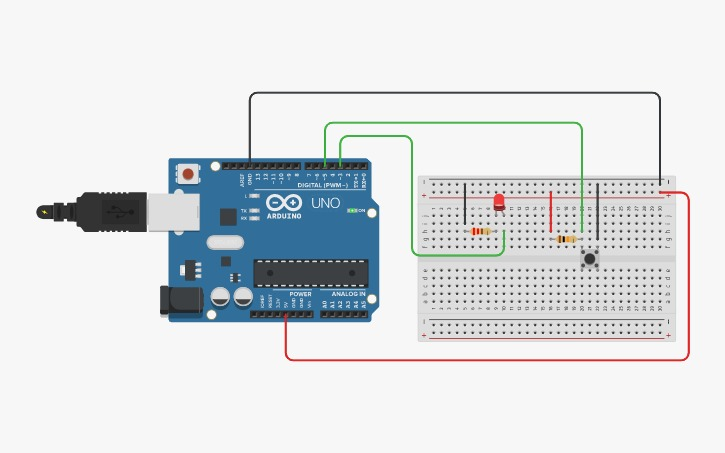

Project 3: LED Toggle with Button
Arduino Uno R3 project
Project Summary
This project demonstrates Digital input/output, debounce. Build it to learn practical aspects of digital input/output, debounce.
Components Required
Key Components
Arduino Uno R3, LED, Push Button, 220Ω Resistor, Jumper Wires, Breadboard
Circuit Diagram

Replace placeholder by adding project3-circuit.png to images/
Pin Connections
| Arduino Pin | Component Connection |
|---|---|
| Button | Digital pin 7 (to GND with INPUT_PULLUP) |
| LED | Digital pin 13 |
Step-by-Step Instructions
- Gather the components and assemble on a breadboard as shown in the circuit diagram.
- Double-check wiring and resistor connections; ensure correct polarity for LEDs.
- Open Arduino IDE, paste the sketch, select board/port, and upload.
- Use Serial Monitor for calibration if the sketch prints values.
Arduino Code
/* Project 3 - LED Toggle with Button (with debounce)
* Hardware: Push button between pin 7 and GND. Use internal pull-up. LED on pin 13.
* Purpose: Show digital input, debouncing, and state toggling.
*/
const int buttonPin = 7;
const int ledPin = 13;
bool ledState = false;
unsigned long lastDebounce = 0;
const unsigned long debounceDelay = 50;
int lastButton = HIGH;
void setup() {{ pinMode(buttonPin, INPUT_PULLUP); pinMode(ledPin, OUTPUT); digitalWrite(ledPin, LOW); }}
void loop() {{
int reading = digitalRead(buttonPin); // read raw input
if (reading != lastButton) {{ lastDebounce = millis(); }} // input changed, reset debounce timer
if ((millis() - lastDebounce) > debounceDelay) {{ // stable for debounceDelay
if (reading == LOW && lastButton == HIGH) {{ // button pressed (active LOW)
ledState = !ledState; // toggle state
digitalWrite(ledPin, ledState ? HIGH : LOW); // update LED
}}
}}
lastButton = reading; // remember for next loop
}}
How It Works
Understanding the Code (line-by-line)
Why these lines matter: 1) INPUT_PULLUP — enables internal resistor so button reads HIGH when open and LOW when pressed. This avoids floating inputs. 2) debounce logic — prevents multiple toggles caused by mechanical bouncing. 3) millis() used for timing — non-blocking and preferred to delay for responsiveness. 4) ledState variable — preserves LED state across loop iterations.
Digital / Analog I/O & Design Notes
Digital pins set with pinMode() drive outputs (HIGH/LOW). AnalogRead reads sensors (0-1023). PWM via analogWrite uses timers to simulate analog voltages.
Expected Output
The project will perform the described behavior (LEDs/buzzer/display) when wired and uploaded correctly. Use Serial Monitor for debugging and calibration.
What You Learned
- How to wire circuits and use a breadboard
- How to program Arduino digital and analog pins
- How to debug using Serial Monitor
Next Steps / Extension Ideas
Enhance with displays, non-blocking timing (millis()), wireless control, or state machines for more complex behaviour.